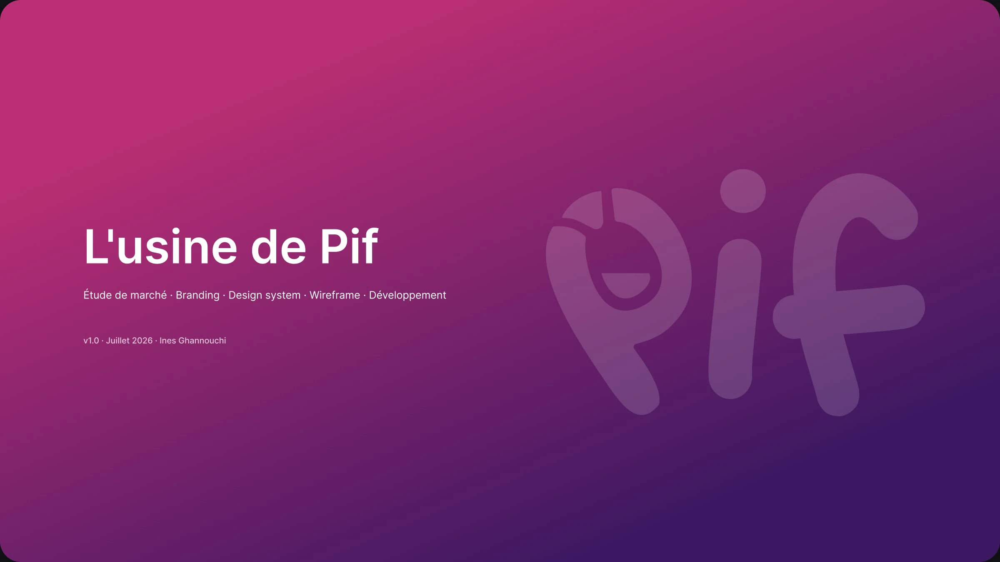
L'app qui rend le vin accessible : explorer, apprendre, noter.
L'idée est née d'une discussion avec Elodie, co-fondatrice de Pif. Sommelière et passionnée de vin, elle a toujours été la référence de ses équipes. Au fil de ses expériences, ses collègues venaient sans cesse lui poser des questions sur tel ou tel vin.
Elle a alors fait un constat. Les informations sur le vin sont éparpillées. Même pour elle, une simple recherche voulait dire une vingtaine d'onglets ouverts dans son navigateur. Et pour garder une trace de ses dégustations, elle se contentait de l'application Notes de son téléphone.
En regardant ce qui existait, nous avons remarqué que des solutions existaient déjà, mais en morceaux : il fallait télécharger au moins trois applications pour apprendre, explorer et noter ses vins.
Marché, cibles et outils existants
Logo, couleurs, typographie, ton de voix
Tokens et bibliothèque de composants
Écrans mobiles et app fonctionnelle
La consommation de vin recule, révélant un désengagement progressif des consommateurs. Pour toucher les nouvelles générations, il faut renouveler la manière de transmettre la culture du vin : plus moderne, plus engageante, plus digitale.
-3,3 %
de consommation mondiale de vin en 2024 (214 M d'hectolitres), le niveau le plus bas depuis 1961. Source : OIV
Du 19 au 27 juin 2026, nous avons interrogé 33 personnes, sans leur présenter le projet, pour mieux comprendre la cible et ses attentes.
Deux segments : 21 % de professionnels ou d'étudiants de la restauration et du commerce du vin, et 79 % de non-professionnels.
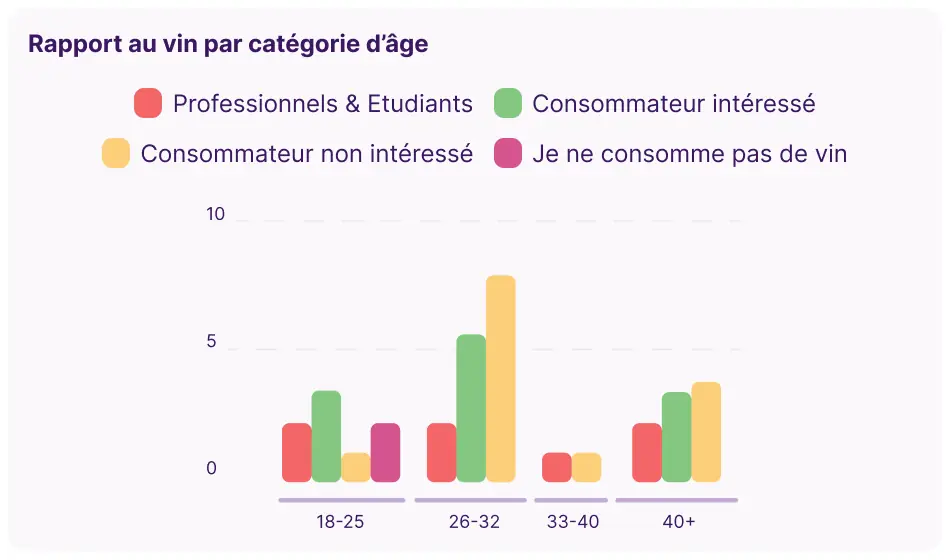
7 répondants
26 répondants
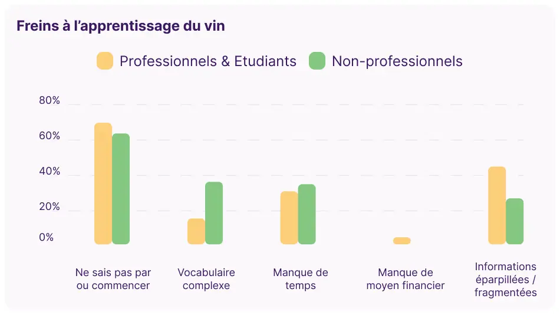
Le premier frein, pour tous : ne pas savoir par où commencer. Viennent ensuite le vocabulaire complexe (surtout chez les amateurs), le manque de temps, et des informations éparpillées (surtout chez les professionnels).
L'intérêt existe : il suffit de lever ces freins. C'est là que Pif intervient.
Une app mobile qui s'inspire du digital learning : des parcours courts et progressifs, des contenus interactifs, et un système de mémorisation pour retenir sur le long terme.
Deux cartes interactives. La carte des régions viticoles, pour découvrir chaque région, sa production, ses cépages et ses sous-régions. Et la carte des domaines, pour voir où se trouvent les différents domaines.
Des cours courts, des quiz et des flashcards, avec une progression visible pour donner envie de continuer.
Un carnet de dégustation guidé par les sens : l'œil, le nez et la bouche. De quoi se souvenir de ce qu'on a aimé.
« Pif », c'est le nez en argot. Et le nez, c'est le premier outil du dégustateur. Le « P » du logo réunit deux symboles : le nez, qui hume le vin, et le verre, dessiné à l'intérieur de la lettre.
Le mot est composé en Super Warming, une typographie ronde et chaleureuse qui casse l'image élitiste du vin.
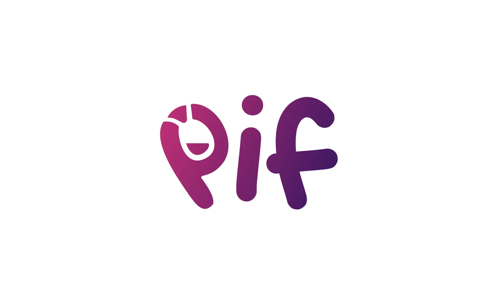
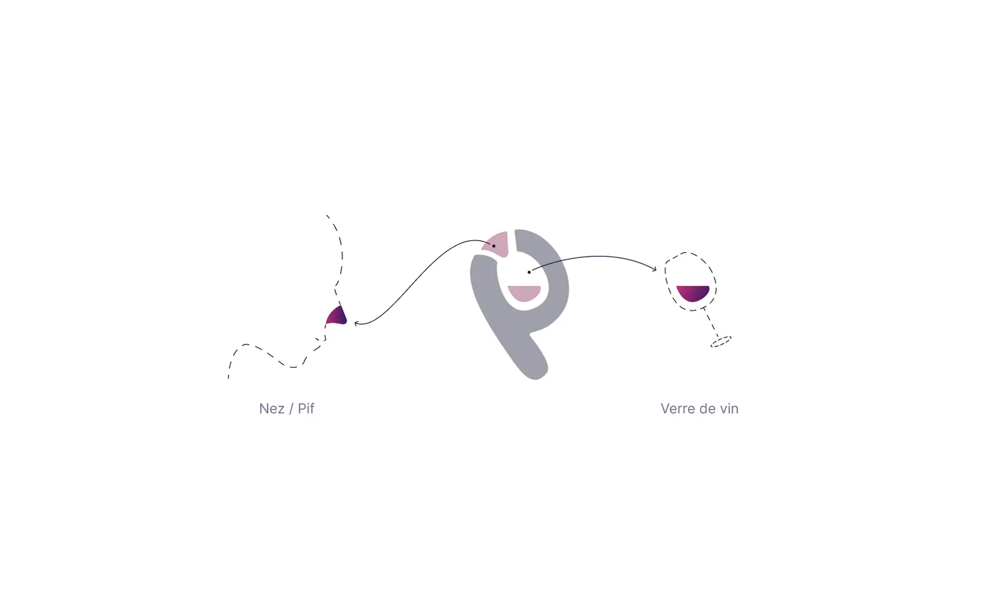
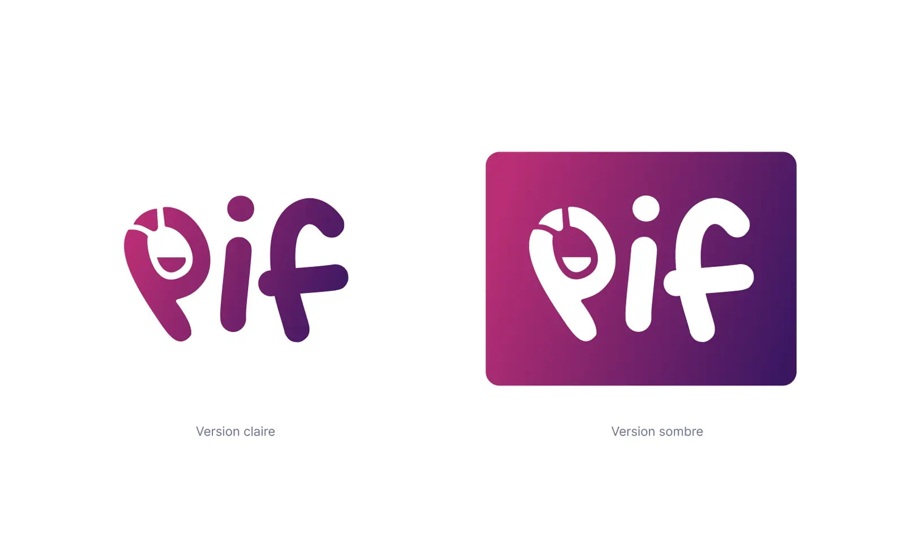
Une version carrée et compacte du « P », pensée pour les petits formats : l'écran d'accueil du téléphone, l'App Store, Google Play, l'onglet du navigateur et les notifications.
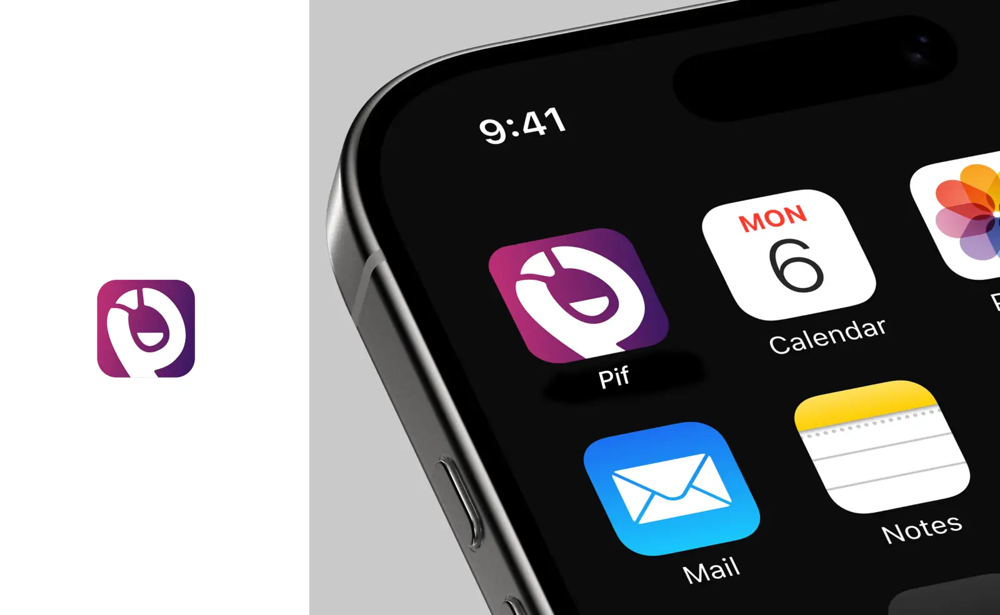
Un design system, c'est plus qu'une bibliothèque de composants. C'est un ensemble de règles qui permet de concevoir vite, de rester cohérent d'un écran à l'autre et de parler la même langue que le code.
Pour construire celui de Pif, j'ai suivi les principes de l'Atomic Design : d'abord les fondations (couleurs, typographie, espacements), puis les composants qui les assemblent, et enfin les écrans.
Atomes
La couleur principale est le violet profond de la marque, accompagné d'un framboise en couleur secondaire. Pour la carte, j'ai ajouté un bordeaux pour les régions viticoles et un bleu clair pour l'eau. Viennent ensuite les couleurs de feedback (succès, alerte, erreur), comme dans toute interface.
Les couleurs sont organisées en deux niveaux. Les primitives contiennent la palette brute. Les tokens sémantiques les nomment selon leur rôle (fond, texte, bordure, icône) : on choisit « text/primary » plutôt qu'un code hexadécimal, et une primitive modifiée se répercute partout.
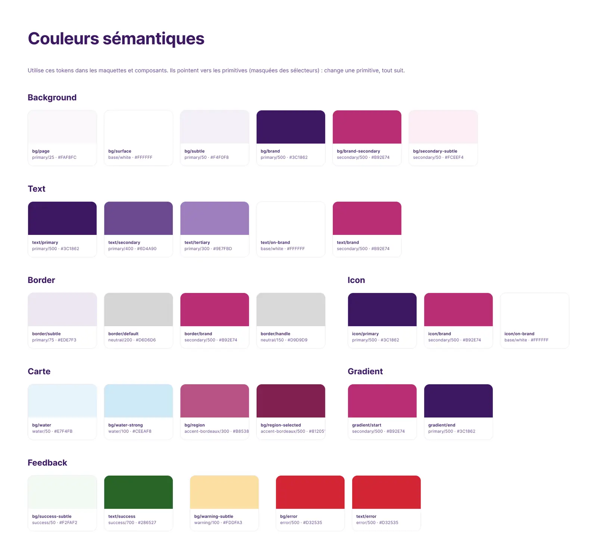
Pour créer une hiérarchie claire sur chaque écran, j'ai défini une échelle typographique en Inter, une police très lisible sur mobile, des grands titres (48 px) jusqu'aux étiquettes (12 px).
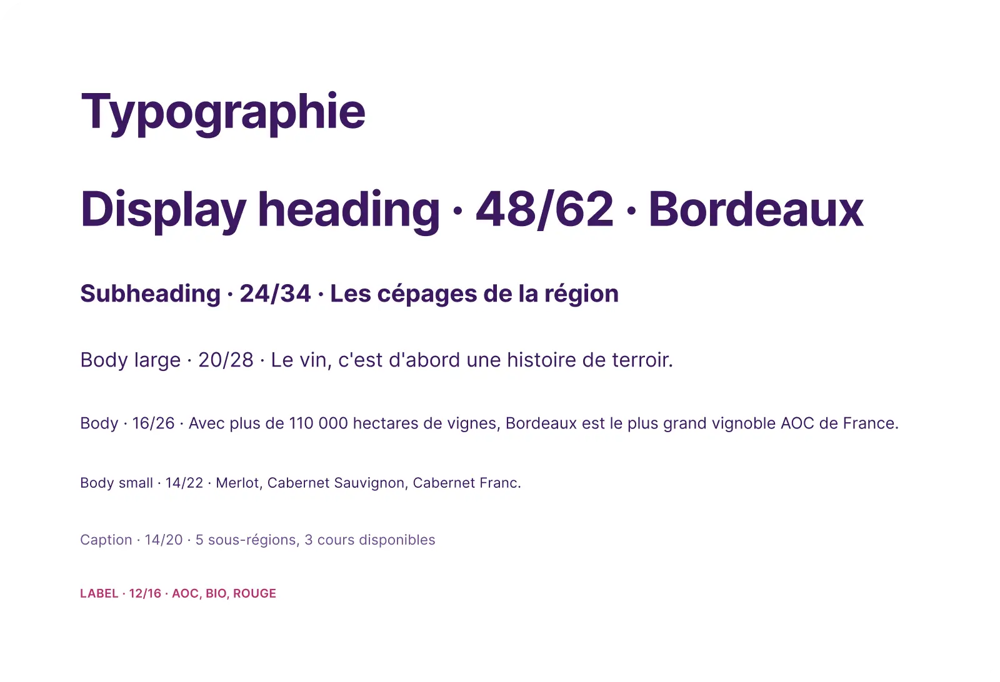
Marges, rayons d'angle et ombres suivent une échelle commune. Chaque valeur est une variable, ce qui garde les écrans réguliers et facilite le passage au code.
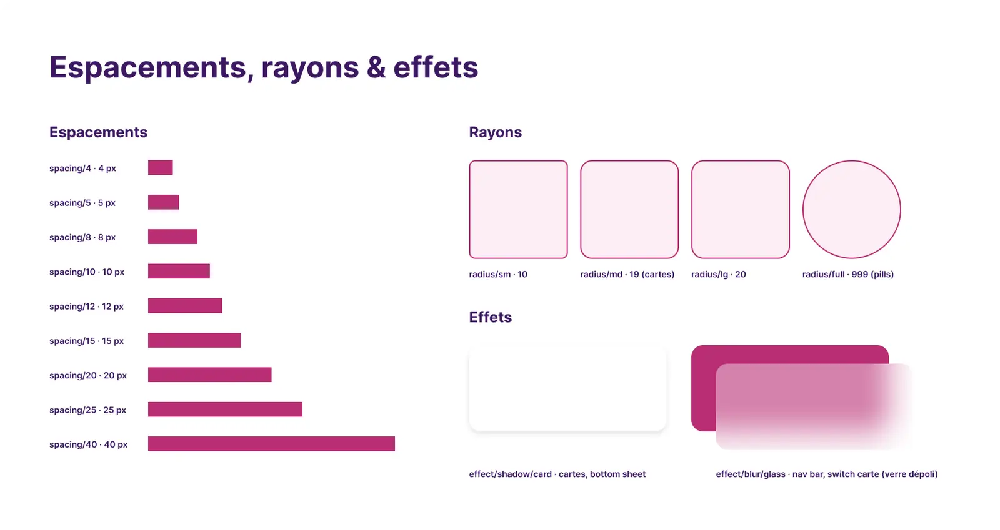
Molécules
Une fois les fondations posées, j'ai assemblé les composants de l'app : barre de navigation, switch, boutons, toggle, recherche et tags. Pour repérer les plus utiles, je suis partie des écrans et j'en ai déduit les éléments qui revenaient. Chaque composant est nommé par catégorie (Catégorie/Nom), pour être retrouvé facilement dans Figma comme dans le code.
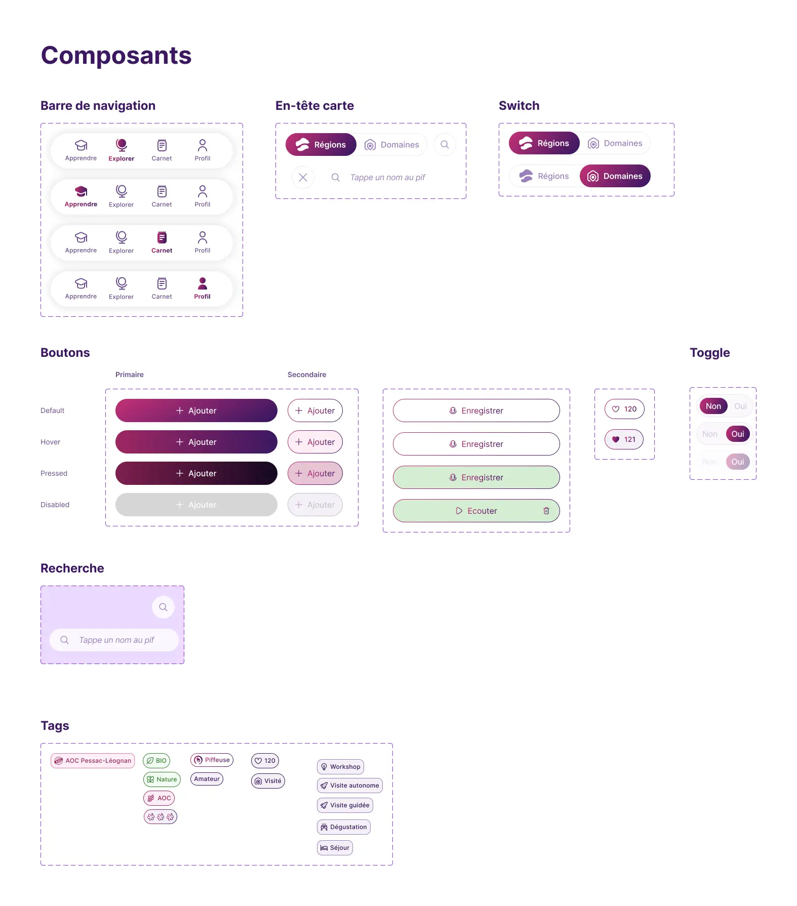
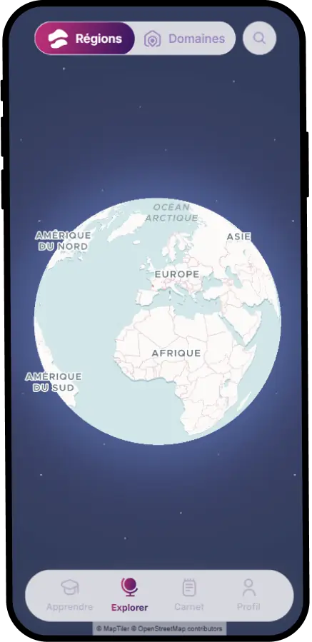
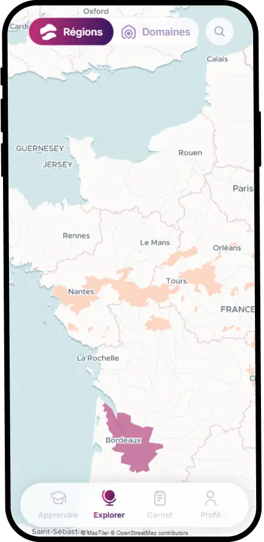
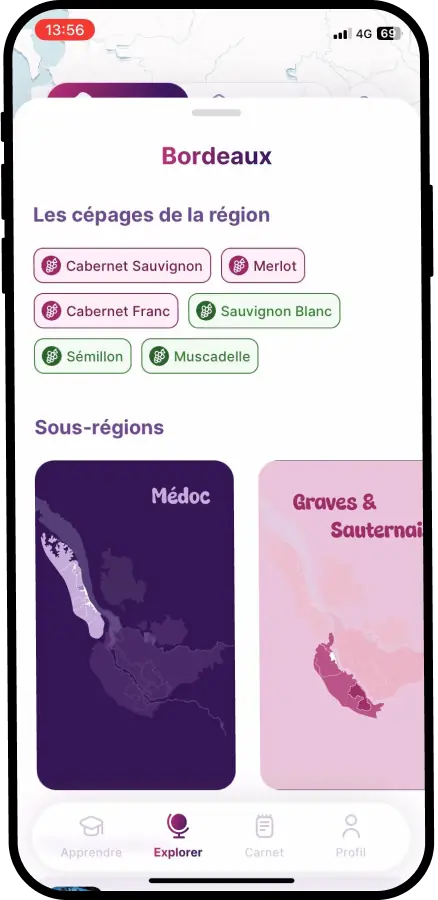
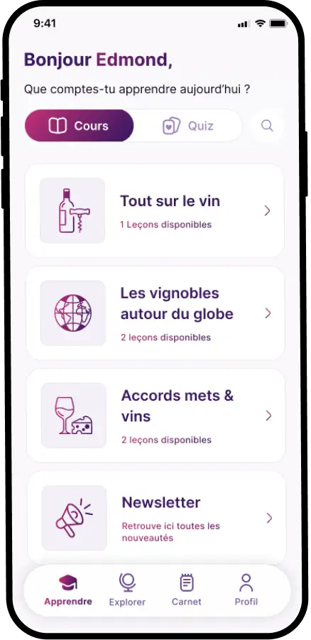
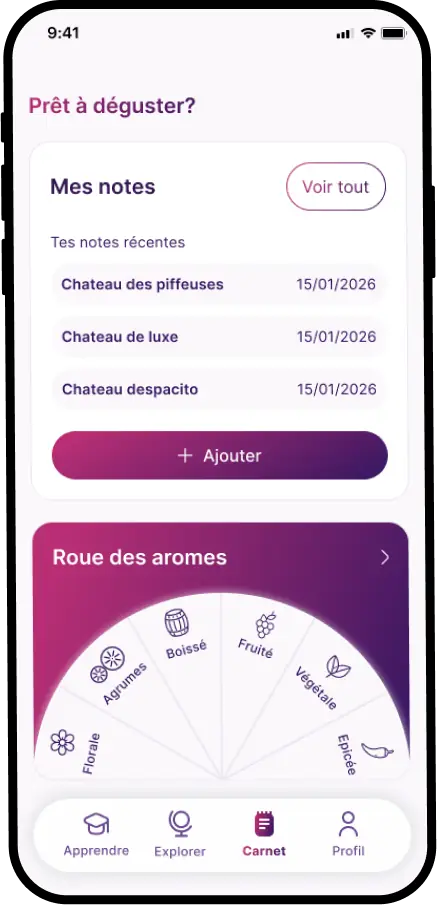
Ma première version de la carte était un grand SVG cliquable, où chaque région était un tracé dessiné à la main. En développant l'app, j'ai compris que cette approche la rendait très lourde. Les tracés détaillés devaient être chargés et redessinés à chaque zoom, et la carte restait figée, impossible à faire évoluer.
Après une recherche sur le fonctionnement des cartes, j'ai appris qu'il fallait plutôt décrire les régions par leurs coordonnées géographiques et les afficher sur une vraie carte intégrée. La carte est devenue plus légère et plus précise, et chaque région n'est plus qu'une simple donnée stockée en base.
Il restait un problème, celui de produire ces données pour chaque région. Moi, je voulais simplement dessiner une région sur une carte, comme on trace un contour avec l'outil plume (pour celles et ceux qui connaissent). J'avais besoin d'un outil qui me facilite ce passage du tracé à la donnée, en convertissant mes tracés SVG en GeoJSON ou en traçant une région directement sur la carte pour l'exporter.
Alors je l'ai créé. Avec Map Regions Maker, j'importe une forme SVG ou je trace la zone sur la carte, je lui donne un nom et une couleur, puis j'exporte le tout en GeoJSON, prêt à rejoindre la base de données de l'app.
Aujourd'hui, l'outil est publié gratuitement, en open source, et chacun peut s'en servir. Son interface est en cours d'amélioration.
Essayer l'outilL'ambition : devenir la plateforme de référence de l'éducation au vin. Ensuite, élargir le contenu à d'autres univers comme le saké, les cidres, les spiritueux du monde et les boissons sans alcool, et développer un écosystème de marque avec des produits dérivés, comme des cartes et des coffrets de dégustation.